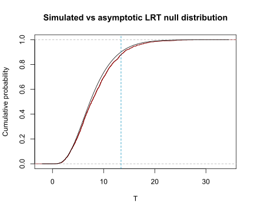

Code
options(show.signif.stars = FALSE)
data(swiss) # see ?swiss for details
m0 <- lm(Fertility ~ Agriculture, data = swiss)
m1 <- lm(Fertility ~ Agriculture + Education, data = swiss)anova() doesn’t do ANOVAJan Vanhove
August 12, 2026
I recently reviewed a paper in which the authors wrote that they compared two mixed-effects models using ANOVA (analysis of variance). That wasn’t quite right, though: while they did use R’s anova() function to compare their two models, this function doesn’t actually run an ANOVA when the models being compared are mixed-effects models. Below, I explain what the anova() function actually does, why you should take its output with a pinch of salt, and how you can obtain more accurate results.
anova() function got its nameIt’s entirely reasonable to assume that comparing mixed-effects models using anova() involves, well, ANOVA. The function is a bit of a misnomer, however, and it is instructive to reconstruct where it got its name from. To do this, we need to consider how model comparisons for the more everyday general linear model can be carried out.
I’ll use some data that’s built-in into R to fit two models. These models are nested in the sense that every parameter that is estimated in model m0 is also estimated in model m1, but not vice versa:
When we apply anova() to the larger model (m1), we obtain a standard analysis of variance table that shows a partitioning of the variability in the outcome:
The sums of squares reported are sequential sums of squares (so-called Type-I sums of squares, in typical intransparent statistics lingo). This means that the Education variable accounted for an additional 2329.8 units of sum of squares beyond what was already accounted for by the Agriculture variable.1
Informally, the F-test for the Education predictor tests if this predictor can account for more variance than would be expected if Education did not have any linear association with Fertility once the linear effect of Agriculture on Fertility has been accounted for. The F-test is finite-sample exact if the model’s errors are identically and independently sampled from a normal distribution. If the errors are independent but not necessarily stem from the same normal distribution, then, by and large, the F-test is still serviceable as a large-sample approximation.2
Now, the variance partitioning above doesn’t explicitly involve m0. But it’s there implicitly: We’re effectively comparing a model with Agriculture and Education as predictors to a model that only has Agriculture as a predictor. We can make this comparison more explicit by feeding both models to the anova() function:
The result is the same. This explains why the function for comparing two nested linear models is called anova().
The advantage of this second use of anova() is that it allows you to fit several predictors at once and check if these new predictors jointly earn their keep:
A sum of squares partitioning lists each predictor separately:
The model comparison tests the joint contribution of the three additional predictors.
Let’s now turn to comparisons of nested mixed-effects models, specifically mixed-effects models with the same random effects but where the fixed-effect parameters estimated in the null model are a subset of those in the larger model. I use a dataset on the academic performance of primary school children that was used by Faraway (2006), but I whittle down the dataset to just 12 schools and one school year to make the point clearer.
Loading required package: MatrixThe goal is to model the pupils’ math performance in terms of their intelligence as measured by the raven test and the social class of their father, represented here as a factor with nine levels. The question is whether raven interacts with social class in terms of their effects on math performance. To that end, two models are fitted, both of which take into account that the pupils are nested in schools by means of random effects:3
We can apply anova() to model m1, but this doesn’t actually run an F-test. The reason is that it’s not clear what the correct number of degrees of freedom for the residual sum of squares should be.4
But like before, we can use anova() to obtain a model comparison:
Despite being called anova(), this function, when applied to two or more mixed-effects models, runs a likelihood ratio test. First, both models, which were fitted using restricted maximum likelihood originally, are refitted using (standard) maximum likelihood for reasons discussed by Faraway (2006, Chapter 8). Then, the likelihood of the data is computed under both models. Call these \(L_0\) and \(L_1\), respectively. According to a theorem due to Wilks (1938), the quantity [ T := -2 () = -2(L_0 - L_1) ] is approximately \(\chi^2\)-distributed in large samples under the null hypothesis, with the degrees of freedom equalling the number of additional parameters in the larger model.
The output above gives us \(\log L_0 = -789.53\) and \(\log L_1 = -782.82\), from which we obtain \(-2 \log\left(\frac{L_0}{L_1}\right) = 13.419\). This value is then compared against the theoretical asymptotic distribution, i.e., a \(\chi^2\) distribution with 8 degrees of freedom, resulting in a p-value of 0.098:
Since the quantity \(L_0/L_1\) is a ratio of likelihoods, the test is called a likelihood ratio test (LRT).
The operative words in the preceding explanation are approximately and asymptotic. What these words mean is that, under the null hypothesis, the quantity \(T\) isn’t actually \(\chi^2\)-distributed—but for ever larger samples, the discrepancies between its distribution and the relevant \(\chi^2\) distribution become ever more negligible. Unfortunately, there is no sensible answer to the question of which sample size is `large enough’, and the actual distribution of \(T\) may differ noticeably from a \(\chi^2\) distribution in practice.
This is why it is recommended to simulate the distribution of \(T\) under the null hypothesis rather than assume the asymptotics have kicked in sufficiently. To achieve this, we can use parametric bootstrapping, that is, we simulate new outcomes from the null model (m0), refit the null model and the larger model using these simulated data, and extract the test statistic \(T\) from the model comparison. We do this a couple of thousand times, and then compare the test statistic that we actually obtained against the distribution of the test statistics obtained via simulation.
The following code snippet estimates the null distribution of the LRT statistic:
# Refit models using (standard) maximum likelihood
m0 <- lmer(math ~ raven + social + (1|school),
data = jspr, REML = FALSE)
m1 <- lmer(math ~ raven * social + (1|school),
data = jspr, REML = FALSE)
# Obtain LRT statistic from model comparison
observed_stat <- anova(m0, m1)[2, 6]
# Simulate 2,000 datasets from null model
M <- 2000
simdat <- simulate(m0, M)
# Fit models to simulated data; extract LRT stats
ctrl <- lmerControl(check.conv.singular = "ignore") # fewer warnings in output
LRTs <- numeric(M)
for (i in seq_len(M)) {
H0_m0 <- lmer(simdat[, i] ~ raven + social + (1|school),
data = jspr, REML = FALSE, control = ctrl)
H0_m1 <- lmer(simdat[, i] ~ raven * social + (1|school),
data = jspr, REML = FALSE, control = ctrl)
LRTs[i] <- anova(H0_m0, H0_m1)[2, 6]
}Figure 1 reveals pretty pronounced discrepancies between the test statistic’s estimated null distribution and its asymptotic null distribution.

A p-value can be obtained by computing the number of test statistics simulated under the null hypothesis that are at least as large as the test statistic that we obtained for our actual data:
So rather than \(p = 0.098\), we obtain \(p = 0.12\).
Incidentally, while it’s also possible to compare nested linear models using a likelihood ratio test, there is little upside to doing so: asymptotically, the F-test and the likelihood ratio test will converge to the same result, but the F-test will do so more quickly than the likelihood ratio test. So you can just stick to the F-test instead. The parametric bootstrap approach, which is useful for comparing mixed-effects models, has no added value when comparing linear models.
When applied to a single linear model, anova() runs an ANOVA. To the extent that the model’s assumptions aren’t met, the results of this ANOVA are approximate but generally quite accurate.
When applied to two or more nested linear models, anova() runs a model comparison by means of an F-test, the results of which coincide with those of an ANOVA—hence the function’s name.
When applied to two or more nested mixed-effects models, anova() runs a model comparison by means of an asymptotic likelihood ratio test. Even if the models’ assumptions are met, the results of this test are approximate. Parametric bootstrapping can be used to obtain more accurate results.
Faraway, Julian. 2006. Extending the linear model with R: Generalized linear, mixed effects and nonparametric regression models. Boca Raton, FL: Chapman & Hall/CRC.
Wilks, Samuel S. 1938. The large-sample distribution of the likelihood ratio for testing composite hypotheses. The Annals of Mathematical Statistics 9(1). 60–62.
─ Session info ───────────────────────────────────────────────────────────────
setting value
version R version 4.6.1 (2026-06-24 ucrt)
os Windows 11 x64 (build 26200)
system x86_64, mingw32
ui RTerm
language (EN)
collate English_United Kingdom.utf8
ctype English_United Kingdom.utf8
tz Europe/Zurich
date 2026-08-12
pandoc 3.8.3 @ C:/Program Files/RStudio/resources/app/bin/quarto/bin/tools/ (via rmarkdown)
quarto 1.9.38 @ C:\\Users\\VanhoveJ\\AppData\\Local\\Programs\\Quarto\\bin\\quarto.exe
─ Packages ───────────────────────────────────────────────────────────────────
package * version date (UTC) lib source
lme4 * 2.0-6 2026-07-16 [1] CRAN (R 4.6.1)
Matrix * 1.7-5 2026-03-21 [2] CRAN (R 4.6.1)
[1] C:/Users/VanhoveJ/AppData/Local/R/win-library/4.6
[2] C:/Program Files/R/R-4.6.1/library
* ── Packages attached to the search path.
──────────────────────────────────────────────────────────────────────────────If we switched the order of the predictors in the lm() call, we’d obtain a different partitioning. The reason is that any variance in the outcome that could have been assigned to either Education or Agriculture would now be fully assigned to Education rather than to Agriculture as in model m1.↩︎
When in doubt, you could try a permutation test. But in my experience, as long as the model is a relevant one, these asymptotics kick in pretty quickly. Hence: Before worrying about model assumptions, think about model relevance.↩︎
I ignore the nesting of pupils in classes for the sake of simplicity.↩︎
You can squeeze out a p-value from this table if you must using the lmerTest package. But the tests this package implements are approximations.↩︎